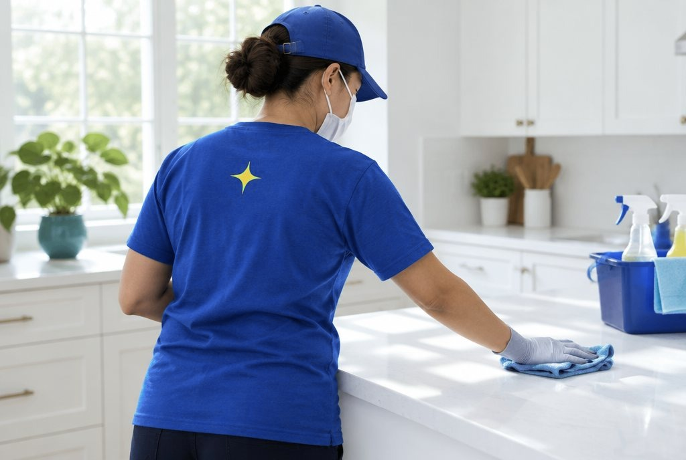

How to hire a house cleaner: 10 things to check first
Letting someone into your home is a big step. A good cleaner makes it easy: you know the price, you know what gets cleaned, and you know what happens if something goes wrong. Here's what to check before you book anyone, us included.

1. A clear price before they arrive
You should know what you'll pay before anyone shows up. Many cleaners price by home size and type of clean, with extras like the inside of the oven listed separately. If all you get is "we'll see when we're there", ask for a price range in writing.
2. A written checklist
"Clean" means different things to different people. Ask for the list: does a standard clean include the stovetop, the microwave, the mirrors, the floors? What does a deep clean add? A list you can see means nothing gets skipped, and you can point to it if something does.
3. What isn't included
Every cleaner has limits. Common ones are moving heavy furniture, outside windows, mold, biohazards and pest messes. Better to hear it before the day than during it.
4. Who brings the supplies
Ask whether they bring the cleaning products and equipment, and whether they'll use your own if you prefer certain products, for allergies, pets or surfaces that need care.
5. The booking rules, in writing
Look for plain answers to three questions. How much notice do I need to reschedule? Is there a deposit, and does it come off the total? What happens if I cancel? Fair rules are easy to find before you pay, not after.
6. What happens if a spot is missed
Even great cleaners miss a spot now and then. What matters is what happens next. A good answer sounds like: tell us within a set time, for example 24 hours, and we come back to fix it, free.
7. What happens if something is damaged
Accidents are rare, but ask anyway: how do I report damage, how quickly, and how will you make it right? A cleaner who answers clearly before you book is one who takes care in your home.
8. Who sees your key or door code
If you won't be home, you'll hand over a key or a code. Ask who will see it, when, and how it's kept. Try not to send codes in a group chat or anywhere other people can read them.
9. Pets, parking and getting in
A good cleaner asks about pets, parking and how to get in before the first visit. If they don't ask, tell them anyway. It saves time and avoids surprises on the day.
10. Real reviews with real details
Look for reviews that describe an actual clean: what was done, how it went, whether they'd book again. A few detailed reviews tell you more than a big number with no words. Check more than one review site.
Red flags
Walk away, or at least ask more questions, if you see any of these:
- No price, or not even a range, until they're inside your home (for a regular home clean).
- Pressure to pay the whole amount upfront.
- Cash only, with no receipt.
- No written rules for cancelling, rescheduling or missed spots.
- Vague answers to "what's included?"
Questions to ask before you book
- What's included in a standard clean? What does a deep clean add?
- How is the price set, and what costs extra?
- Do you bring the supplies?
- How much notice do you need to reschedule, and what happens if I cancel?
- What happens if you miss a spot, or something gets damaged?
- Who will have my key or door code, and when?
Our answers, up front
- Prices by home size and type of clean, shown before you book, from $140.
- The same checklist in every home, so nothing gets skipped.
- We bring every supply. You don't buy a thing.
- A $40 deposit holds your spot and comes off your total. Reschedule free with 48 hours' notice.
- Missed a spot? Tell us within 24 hours and we come back to fix it, free.
- What we don't do: move heavy furniture, wash outside windows, or clean mold, biohazards or pest messes.
See who's coming before you open the door
In the app you see your cleaner's profile before the day, and your door code stays in a locked field that only your cleaner (and any helper) sees, from an hour before your start time until they leave.
- Book your clean and see the price before you pay.
- See who's coming before the day: first name, photo, rating and reviews.
- Follow it on the day: on the way, arrived, all done.
- Get your Shine Report: photos of each room, so you can see the difference.
The app is in testing on iPhone. Join the beta and we'll email you an invite.